красный стеклярус · варёный хлопок
RUSSIAN
GIRL
Красный стеклярус ждали из Москвы две недели: другой оттенок не подошёл. Буквы собраны по бусине и загораются, когда поворачиваешься.
красный стеклярус · варёный хлопок
Красный стеклярус ждали из Москвы две недели: другой оттенок не подошёл. Буквы собраны по бусине и загораются, когда поворачиваешься.

гладь · голубая и песочная нить
Киты живут внутри букв: у каждого своя спина и свой хвост, вышитые гладью стежок к стежку.
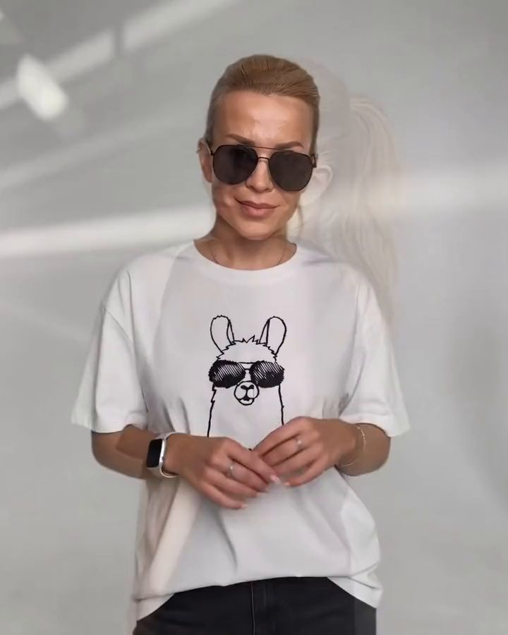
чёрная нить · белый хлопок
Лама нарисована одной чёрной строчкой, а очки-авиаторы собраны из бисера и переливаются на свету.
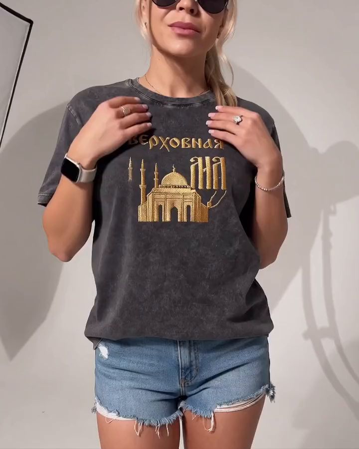
золото · варёный хлопок
Мечеть с минаретами и слово выложены золотом так плотно, что ткани под ними не видно.

стеклярус · стразы · цепи
Серебряный и красный стеклярус, россыпь страз и цепи, которые висят свободно и звенят при каждом шаге.
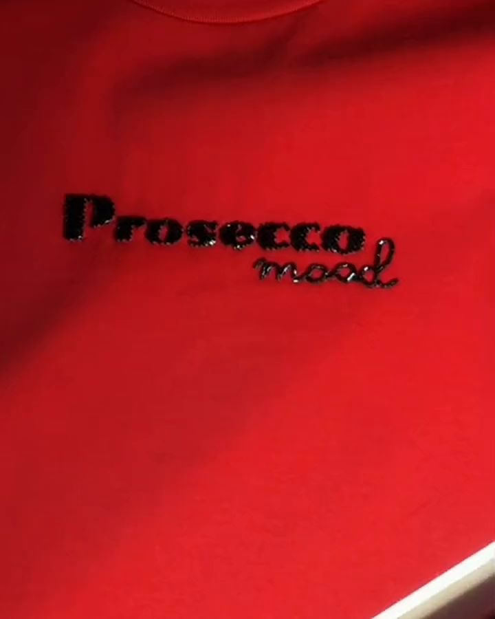
чёрный бисер · красный хлопок
Одно слово крупно, настроение мелко. Всё началось с эскиза на бумаге и горсти чёрного бисера на красной ткани.
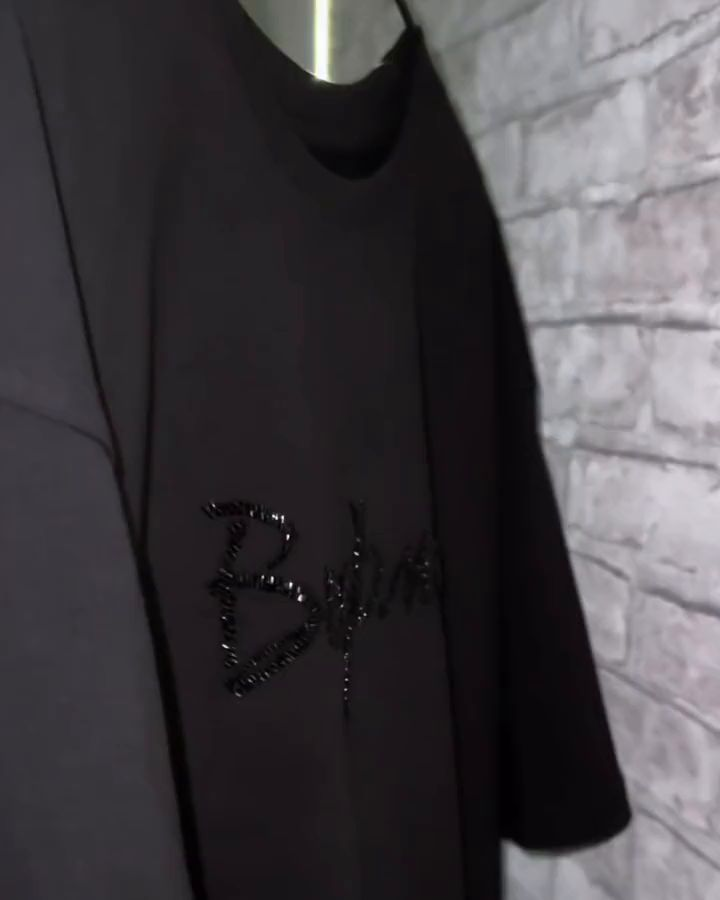
чёрный стеклярус · чёрный хлопок
Чёрное стекло по чёрной ткани: надпись почти не видна, пока на неё не упадёт свет.
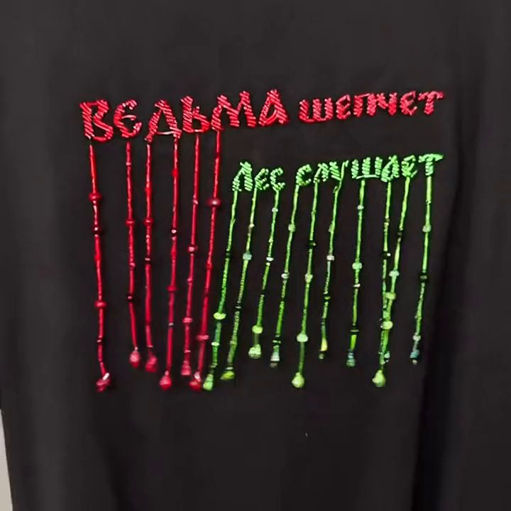
стеклярус · подвески-капли
Каждая нить с каплей на конце пришита отдельно, поэтому они качаются, пока ты идёшь.
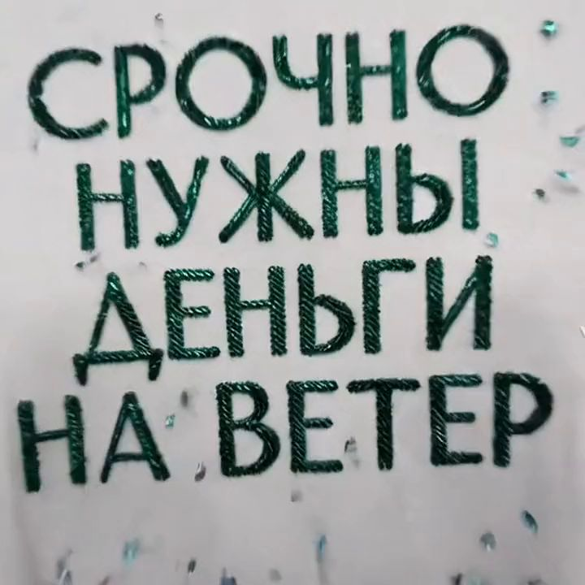
зелёная нить · белый хлопок
Четыре строки зелёной глади, ровные, как на купюре. Такую не объясняют, её просто носят.
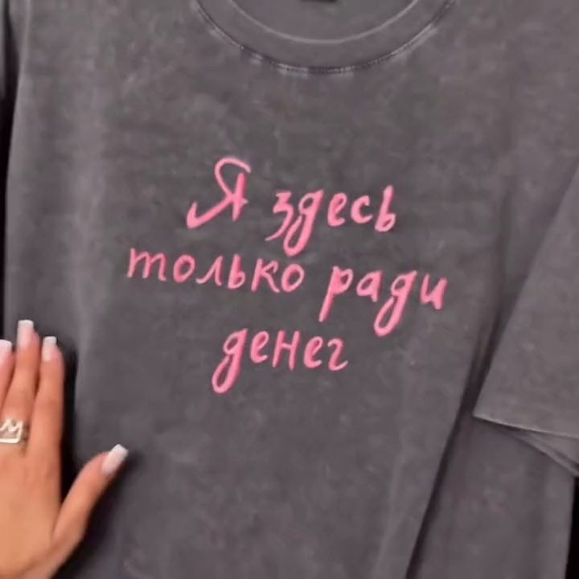
розовая нить · варёный хлопок
Розовая рукопись по варёному серому. Это почерк, а не шрифт: у каждой буквы свой наклон.
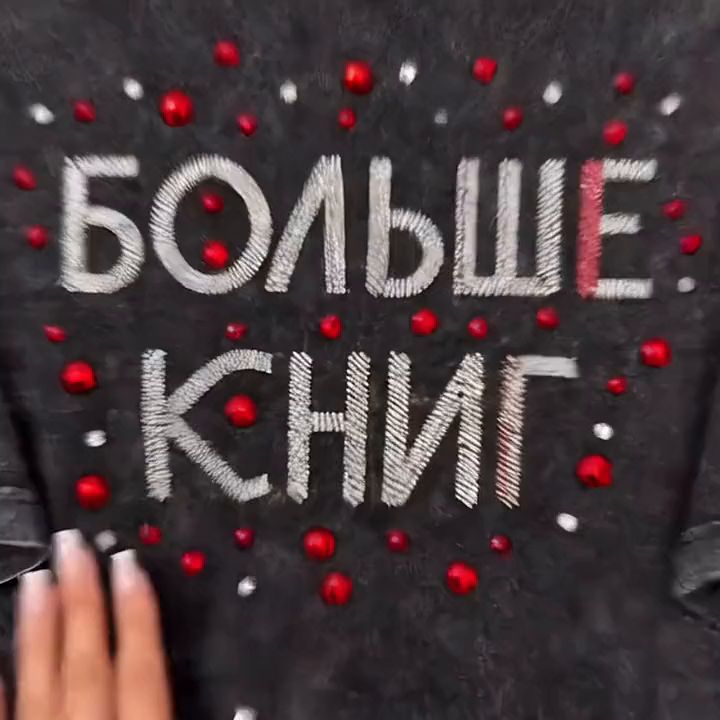
серебряный стеклярус · красные стразы
Серебряный стеклярус, последняя «Е» красная, вокруг россыпь страз. Есть и тихая версия: голубая нить на голубом.
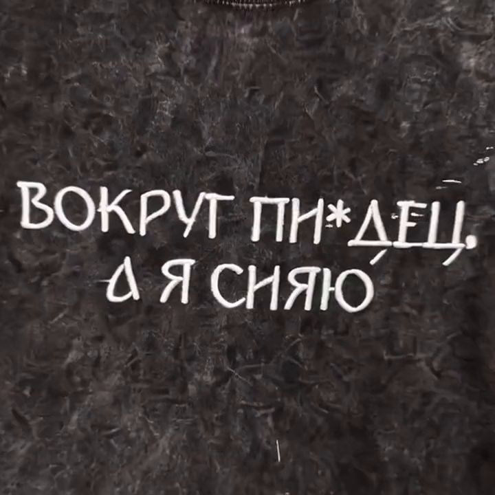
белая нить · варёный хлопок
Белая строчка по тёмной мятой ткани. Слово ровно такое, как вышито, со звёздочкой.
красная нить · бисерные стрелки
Цитата Майка Тайсона красным контуром, вокруг бисерные стрелки. Шесть строк, как шесть раундов.
как это собрано
Не принт и не наклейка. Бусина к бусине, стежок к стежку. Вот так это выглядит, если подойти вплотную.
вешалка
Каждая висит на своих плечиках. Потяни рукав или бок: ткань поддастся и вернётся на место.


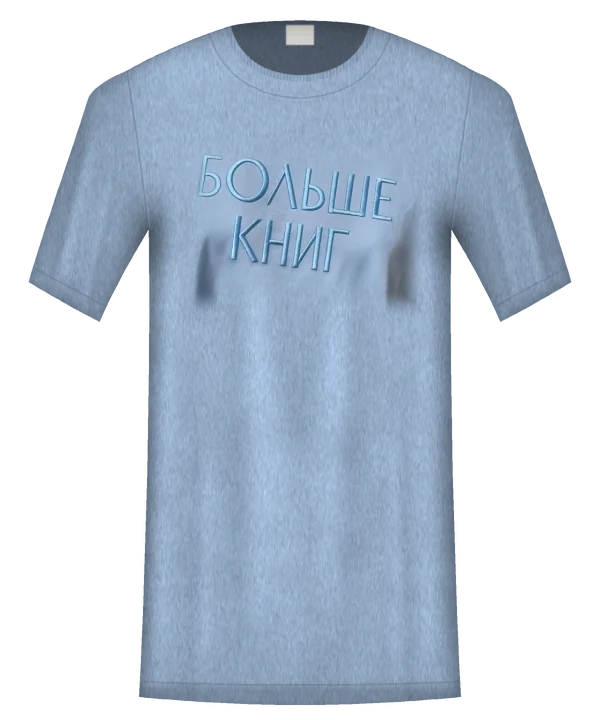


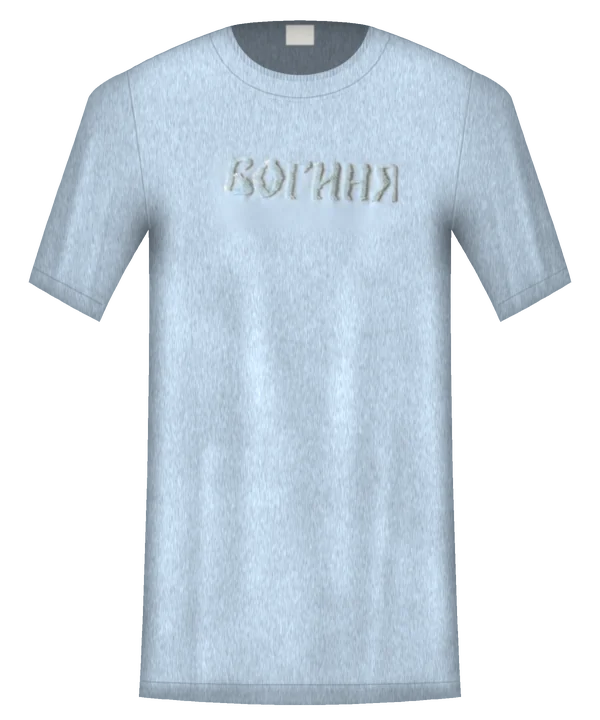
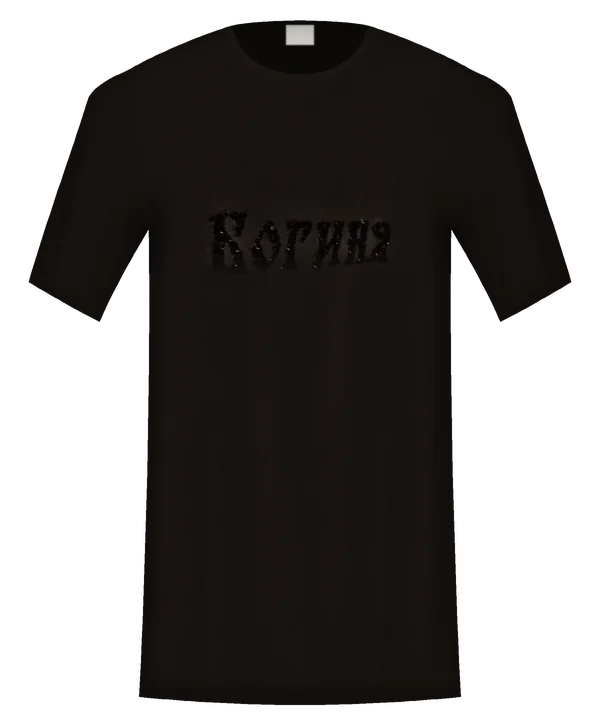